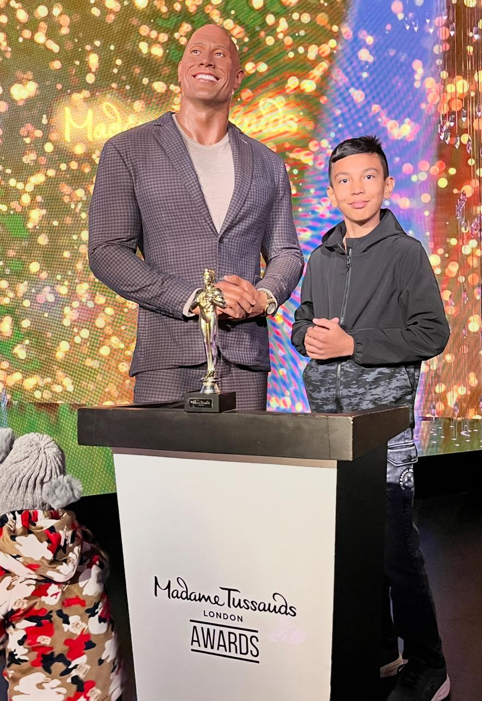
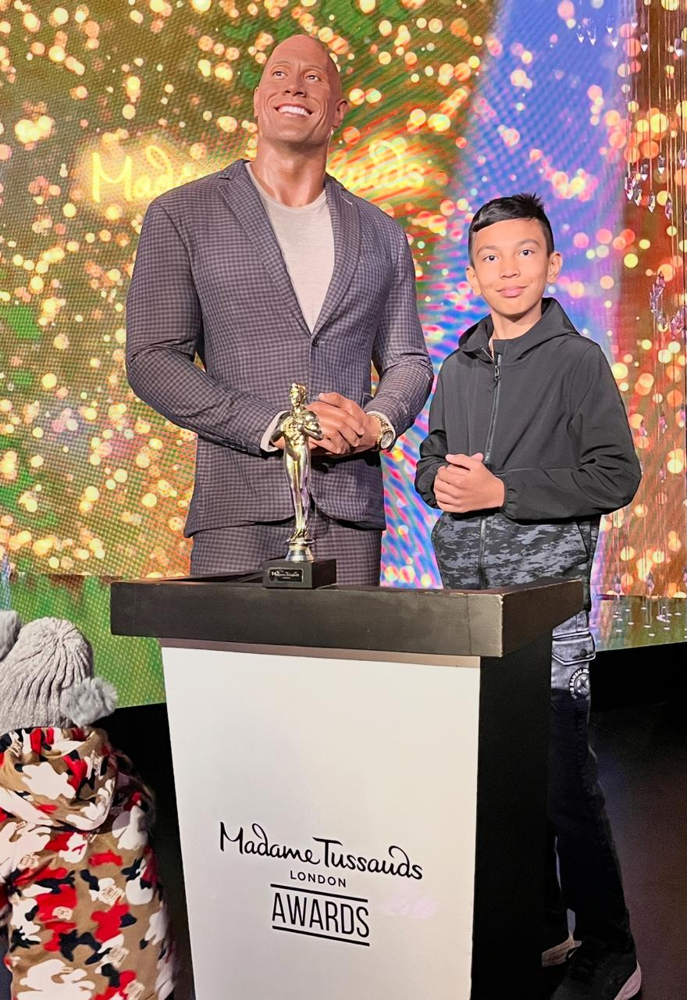

Hello everyone, I am RONIT AJAY RANGNANI and I am excited to share a bit of myself with you. So, let's get started.
I am 14 years old & I am currently studying in grade 9th of SCTS (Sri Chaitanya Techno School). In the past 2 to 3 years, I have developed many qualities in myself with the help of my parents like, leadership, confidence, humbleness, disciplane & many more. I also have many hobbies such as, travelling across the world, reading fictional books, listening music, playing cricket, drawing & many more. Because of all these, I have been able to become one of the most efficient, wise, skilled & disciplaned student as well as child to my techers and parents, respectively.
I have always been a tech-savvy person since my childhood. I love exploring new technologies and learning how they work. This curiosity has driven me to pursue a career in technology in the future. I am particularly interested in fields like artificial intelligence and software development. This ambition of mine attracted me to Codingal. It is a platform at which children can learn more and more about advance technologies, artificial intelligence and most importantly coding. If you want help in coding and looking forward for a wonderful experiance in coding,
YOU ARE WELCOME TO CODINGAL
I am really looking forward to learning and exploring more about coding and technology through Codingal. Apart from this, let's talk abouy my achievements.
 
